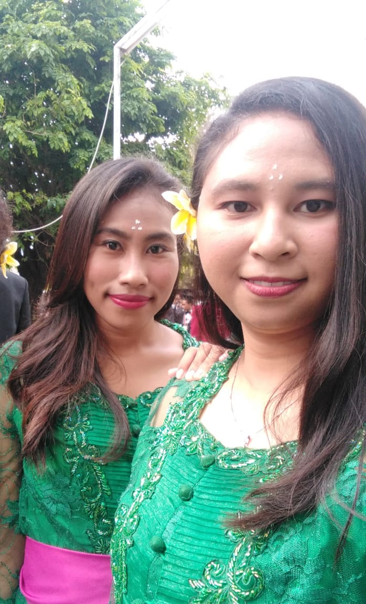

Tugas Praktikum Teknologi Cloud

Hallow Guys nama saya Fransiska Seuk Bria Nim 175410025 dan nama teman saya Marcelina Florentima Nadur Nim 185410088, kita kuliah di kampus STMIK Akakom Yogakarta jurusan Teknik Informatika. Teknik Informatika merupakan salah satu jurusan pendidikan tingkat perguruan tinggi yang mempelajari serta menerapkan prinsip-prinsip ilmu komputer dan analisis matematis dalam perancangan, pengujian, pengembangan, dan evaluasi sistem operasi, perangkat lunak (software), dan kinerja komputer. Dalam kata lain, bidang studi ini akan melakukan pembahasan terkait pengolahan data dengan memanfaatkan teknologi komputer yang menggunakan prinsip dan proses logika. Bila memutuskan untuk memilih jurusan Teknik Informatika, maka kamu akan cukup banyak berkutat dengan pemrograman (programming), perangkat lunak (software), dan teknologi jaringan komputer. Pada dasarnya, kamu akan menjadi penerjemah suatu ide yang harus dituangkan dalam bentuk digital menggunakan bahasa pemrograman tertentu. Dalam prosesnya, kamu akan banyak membuat flowchart alias bagan alur bagaimana sebuah sistem dapat berjalan sesuai dengan fungsi dan logikanya. Tentu saja, ketelitian dan keuletan menjadi karakter paling dasar yang harus kamu miliki. Itu sedikit cerita tentang jurusan kami Guys.